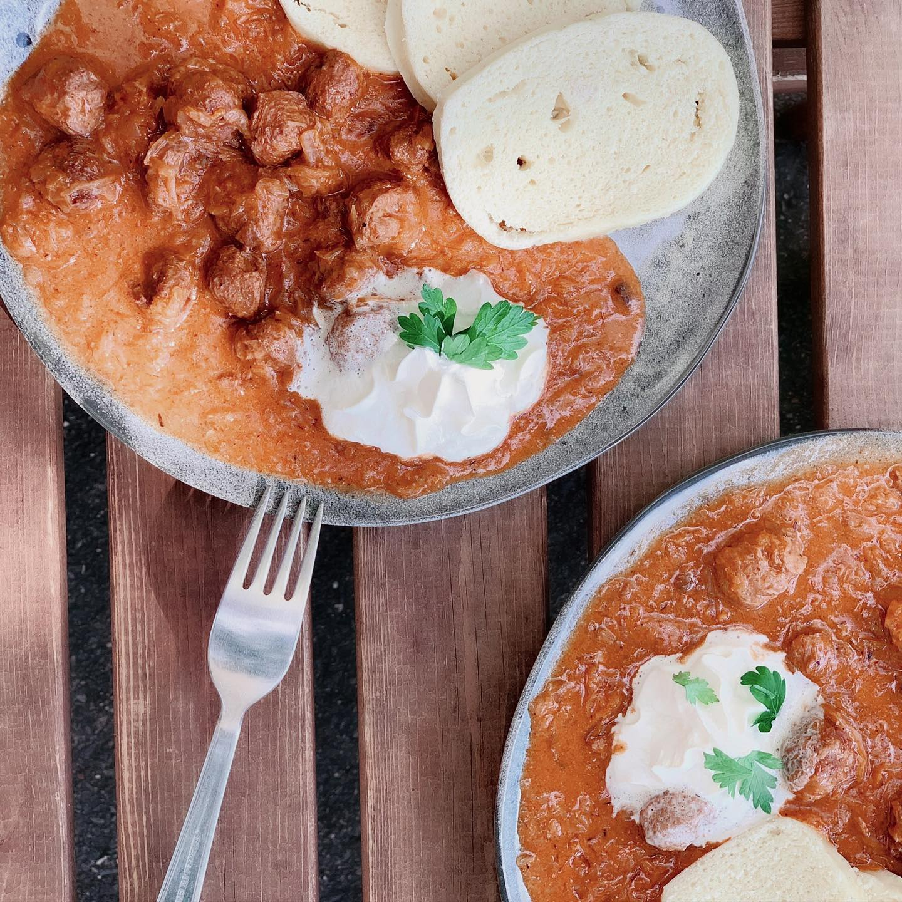

Segedínsky guláš podľa @happybeanbistro — Normy Jedál
Dnes dobrota s maďarské kuchyně, segedinský guláš s houskovým knedlíkem a “masovými” kousky. Určitě se zastavte 😋 #segedin #gulas #segedinskygulas #knedliky #houskovyknedlik #vegetarian #bezmasa #zeli #cabbage #sojovemaso #zdravyzivotnistyl #zdravastrava #healthyfood #top #yummy #yummyfood #jirihozpodebrad #happybeanbistro